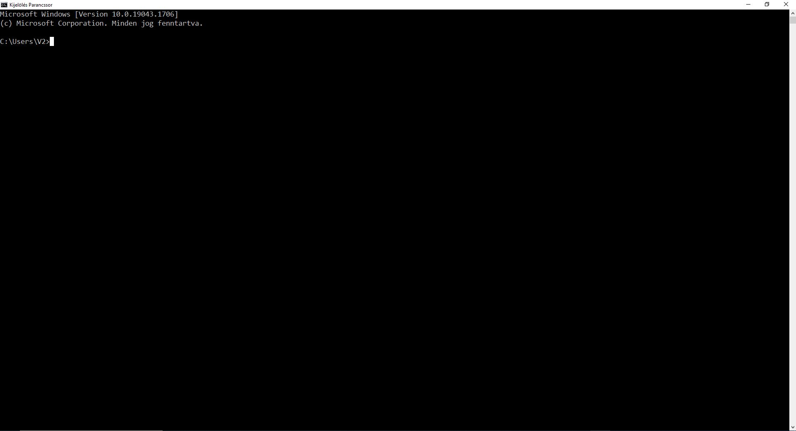
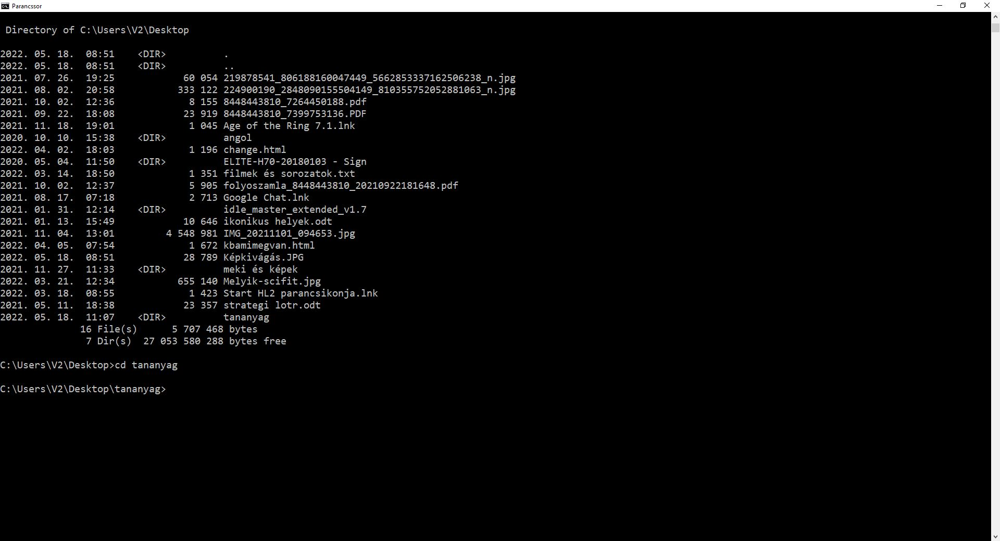
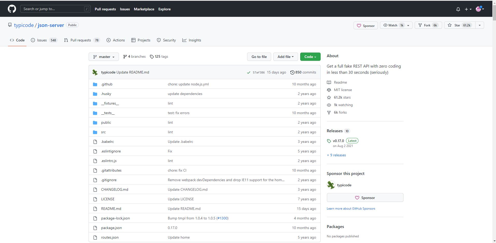

A GitHub
A GitHub itt érhető el: github.com
A GitHub egy ingyenes Git szerver
Ide tudják az együtt dolgozó kollégák feltölteni a módosításaikat és a GitHub-on keresztül szinkronizálni a munkájukat.
hasznos linkek:
Egy GitHub Repository klónozása
Mi az a klónozás?
Az a művelet, amikor egy meglévő Git repository tartalmát letöltöm a gépemre és beállítom, hogy a Git figyelje a mappát.
A klónozható URL kimásolása a GitHub oldaláról:
Parancssor nyitása a Sajátgépen
Betallózás a kívánt könyvtárba.
(A "cd mappaneve" paranccsal tudunk bemenni a mappába, ha a cd után két pontot rakunk (..), akkor kifele lépünk, illetve a "dir"-el megnézhetjük, hogy mi van a mappában. Ezen kívül van egy csomó másik, például a "new .txt"-vel txt fáljt adunk hozzá, vagy a "code ."-al megnyitjuk a Visual Studio Code-val a mappát.)
Ezek után leklónozzuk.

(A klónozást úgy csináljuk, hogy a "git clone" kifejezés után beírjuk a GitHub linkjét.)
Forkolás
A forkolás nagyon hasonló a klónozáshoz, csak itt nem én hozom létre a kezdő tartalmat. Valaki másnak kiválasztom a repo-ját, majd egyszerűen rányomok a Fork gombra. Így létrejön egy új repo a saját nevem alatt, de az eredeti repo tartalmával. Innen már én fejlesztem tovább az alkalmazásomat, a módosításaim nem lesznek hatással az eredeti, forkolt repo-ra.
(A forkolásnak a jele a jobb fölső sarokban van. Ez már amikor átkerül az én nevem alá lehet is klónozni és használni.)
A fájlok különböző állapotai a fejlesztés során
Itt inkább két kép az, ami jól megmutatja a dolgokat. Alá beírom a parancsokat.


(Lokális parancsok: git status --help, git add --help, git commit --help)
Egy fájl négy állapotban lehet a gépünkön:
- Untracked:a Git nem törődik a fájllal. Ez újonnan létrehozott fájloknál jellemző.
- Unmodified:a Git követi a fájlt, és mi nem módosítottuk azt. Ez az újonnan letöltött fájlok állapota.
- Modified:a Git követi a fájlt, és mi módosítottuk.
- Staged:a Git követi a fájlt, mi módosítottuk, és a módosítás be fog kerülni az adatbázisba.
- Létrehozunk egy új fájlt
- git add parancssal hozzáadjuk a staging area-hoz
- git commit paranccsal a staging area tartalmát hozzáadjuk az adatbázishoz
Szinkronizálás
Ismerjük a commit parancsot, amivel a változtatásainkat tudjuk véglegesíteni a helyi gépünkön. Ideje ezeket feltölteni egy közös Git szerverre. A közös munka alapját a következő három parancs jelenti:
Fetch - Mi történt mostanában?
A "git fetch" parancs megnézi, milyen változások történtek a szerveren. Ezeket a változásokat le is tölti, de nem nyúl hozzá az aktuális munkánkhoz, a working directory nem változik a hatására. Ezáltal nyugodtan kiadhatjuk bármikor a parancsot, nem lesz kellemetlen mellékhatása.
Pull - Jöhet minden!
A "git pull" parancs letölti a változásokat a szerverről, és integrálja a saját munkánkba. Fontos különbség a fetch parancshoz képest, hogy a pull nem egy biztonságos parancs, változni fog a mappánk tartalma, ha kiadjuk. Mindig commitoljunk, mielőtt kiadnánk a pull parancsot!
Push - Megy a munkám!
A "git push" parancs feltölti a commitjainkat a szerverre. Jegyezzük meg, csak azok a változások mennek fel, amiket commitoltunk! Mielőtt pusholni próbálnánk, kérjük el a szervertől a változásokat a pull paranccsal!